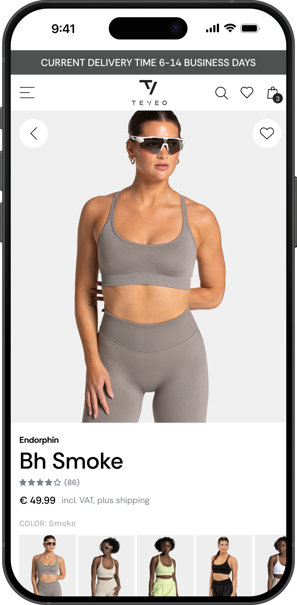
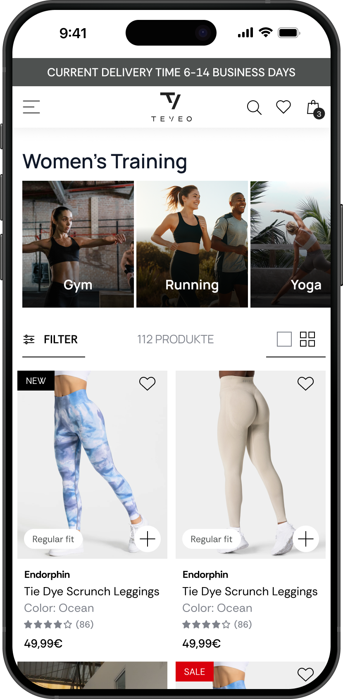

01
TEVEO
€50M
in annual webshop revenue
Problem
TEVEO's Shopify site was originally built for a niche leggings brand, but they had grown into a unisex sportswear company. With 24+ product drops a year, this caused real issues: the website became harder to navigate, customers struggled to find products, and the team had no insights into what was driving conversions.
My Role
I took ownership after the lead designer set the visual direction, translating those concepts into a scalable design system with a focus on CRO and a smooth handoff to dev.
Key contributions
- Designed a library of 40+ reusable components and templates for a scalable design foundation.
- Redesigned navigation to keep TEVEO's growing unisex range easy to discover.
- Redesigned key pages (Homepage, PLP, PDP, About Us) to improve readability, highlight trust signals, and clarify the path to purchase.
- Collaborated with PM, CRO, Dev, and Teveo marketing team to align on goals, constraints, and user needs.

